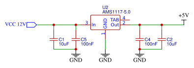
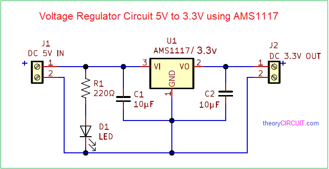

This circuit helps reduce a 12V input down to a safe and steady 5V output using a voltage regulator called AMS1117-5.0. Many electronic components like Arduino, sensors, and microcontrollers run only on 5V — giving them more than that can damage them.
The AMS1117 takes the high voltage (12V) and drops it down to exactly 5V. But to make sure the power is clean and smooth, we add two types of capacitors:
This kind of voltage conversion is especially useful when powering microcontrollers from batteries or adapters. It makes your circuit safer and more reliable.
| Component | Value | EasyEDA Library Name |
|---|---|---|
| Voltage Regulator IC | AMS1117-5.0 | AMS1117-5.0 |
| Electrolytic Capacitor | 10uF | C_Elec_10uF |
| Ceramic Capacitor | 100nF | C_100nF |
| Input Voltage | 12V | Power_In |
| Output Voltage | 5V | VCC_5V |
This circuit reduces a 5V input to a lower and stable 3.3V output using a voltage regulator called AMS1117-3.3. Many advanced modules like ESP8266, ESP32, and some sensors work only with 3.3V and will be damaged if given 5V directly.
To protect these components, the AMS1117-3.3 safely converts 5V down to 3.3V. Just like the previous design, we use a combination of capacitors:
This kind of setup is commonly used in Wi-Fi modules, Bluetooth modules, and low-voltage sensors. It ensures that your circuit gets the correct voltage and avoids overheating or damage.
| Component | Value | EasyEDA Library Name |
|---|---|---|
| Voltage Regulator IC | AMS1117-3.3 | AMS1117-3.3 |
| Electrolytic Capacitor | 10uF | C_Elec_10uF |
| Ceramic Capacitor | 100nF | C_100nF |
| Input Voltage | 5V | VCC_5V |
| Output Voltage | 3.3V | VCC_3.3V |